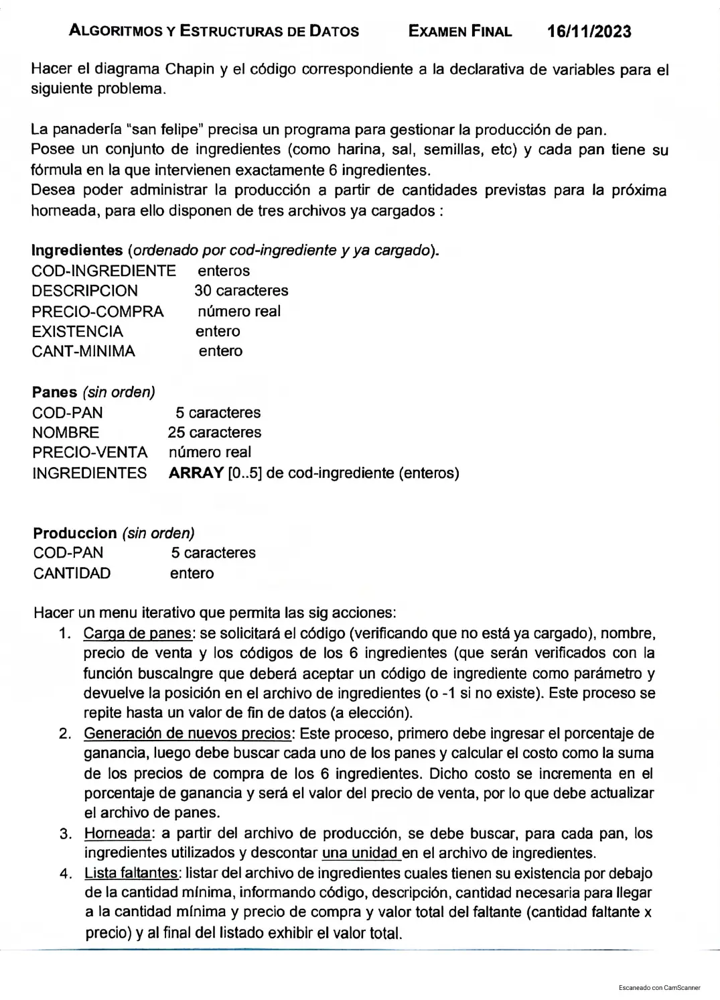

Final, 16/11/2023 (Panadería)
3° parcial y final, 16/11/2023
Enunciado


Propuesta de respuesta
Respuesta no verificada. La propuso Luta Studios con inteligencia artificial y ningún docente la revisó. Puede tener errores.
La hoja pide el diagrama de Chapin. Va un diagrama por módulo, con su declaración de variables arriba, y primero el del programa principal. Si un diagrama no entra en la pantalla, tocalo para verlo completo. Después de los diagramas está el mismo algoritmo en Python, para que lo puedas probar. Las sentencias de archivos van con las palabras reservadas de Python (open, pickle.load, pickle.dump, seek, tell). Los textos se completan con ljust para que los registros midan lo mismo. El tamaño de un registro sale de tell() después de leer el primero.
Menú iterativo
1. Carga de panes
2. Generación de nuevos precios
3. Horneada
4. Lista de faltantes
El mismo algoritmo en Python
Es el programa que se probó, con las mismas sentencias y en el mismo orden que las cajas. Cada Leer del diagrama es un input, convertido a int o float según la declaración, y cada Mostrar es un print.
import os
import pickle
class Ingrediente:
def __init__(self):
self.codIngrediente = 0
self.descripcion = ""
self.precioCompra = 0.0
self.existencia = 0
self.cantMinima = 0
class Pan:
def __init__(self):
self.codPan = ""
self.nombre = ""
self.precioVenta = 0.0
self.ingredientes = [0]*6
class Produccion:
def __init__(self):
self.codPan = ""
self.cantidad = 0
# afIngredientes, afPanes, afProduccion: str
# alIngredientes, alPanes, alProduccion: archivo
# tamIng: int
afIngredientes = "INGREDIENTES.DAT"
afPanes = "PANES.DAT"
afProduccion = "PRODUCCION.DAT"
alIngredientes = open(afIngredientes, "r+b")
alPanes = open(afPanes, "r+b")
alProduccion = open(afProduccion, "rb")
pickle.load(alIngredientes)
tamIng = alIngredientes.tell()
def buscaIngre(cod):
# Dicotómica: Ingredientes está ordenado por código. Devuelve el nro de registro o -1
# cod, inicio, fin, medio, pos: int
# reg: Ingrediente
inicio = 0
fin = os.path.getsize(afIngredientes) // tamIng - 1
pos = -1
while inicio <= fin and pos == -1:
medio = (inicio + fin) // 2
alIngredientes.seek(medio * tamIng, 0)
reg = pickle.load(alIngredientes)
if reg.codIngrediente == cod:
pos = medio
elif cod < reg.codIngrediente:
fin = medio - 1
else:
inicio = medio + 1
return pos
def BUSCA_PAN(cod):
# Secuencial: Panes no tiene orden. Devuelve el byte donde empieza o -1
# cod: str
# tam, pos, p: int
# reg: Pan
tam = os.path.getsize(afPanes)
pos = -1
alPanes.seek(0, 0)
while alPanes.tell() < tam and pos == -1:
p = alPanes.tell()
reg = pickle.load(alPanes)
if reg.codPan == cod:
pos = p
return pos
def CARGA_PANES():
# cod: str
# i: int
# reg: Pan
# Fin de datos: código "*"
cod = input("Código de pan (* para terminar): ")
while cod != "*":
cod = cod.ljust(5, " ")
if BUSCA_PAN(cod) != -1:
print("Ese pan ya está cargado")
else:
reg = Pan()
reg.codPan = cod
reg.nombre = input("Nombre: ").ljust(25, " ")
reg.precioVenta = float(input("Precio de venta: "))
while reg.precioVenta <= 0:
reg.precioVenta = float(input("Tiene que ser mayor que 0: "))
for i in range(6):
reg.ingredientes[i] = int(input("Código del ingrediente " + str(i + 1) + ": "))
while buscaIngre(reg.ingredientes[i]) == -1:
reg.ingredientes[i] = int(input("No existe ese ingrediente, ingrese otro: "))
alPanes.seek(0, 2)
pickle.dump(reg, alPanes)
alPanes.flush()
cod = input("Código de pan (* para terminar): ")
def NUEVOS_PRECIOS():
# porc, costo: float
# tam, pos, i: int
# pan: Pan
# ing: Ingrediente
porc = float(input("Porcentaje de ganancia: "))
while porc < 0:
porc = float(input("No puede ser negativo: "))
tam = os.path.getsize(afPanes)
alPanes.seek(0, 0)
while alPanes.tell() < tam:
pos = alPanes.tell()
pan = pickle.load(alPanes)
costo = 0
for i in range(6):
alIngredientes.seek(buscaIngre(pan.ingredientes[i]) * tamIng, 0)
ing = pickle.load(alIngredientes)
costo = costo + ing.precioCompra
pan.precioVenta = costo + costo * porc / 100
alPanes.seek(pos, 0)
pickle.dump(pan, alPanes)
alPanes.flush()
def HORNEADA():
# tam, posPan, posIng, i: int
# prod: Produccion
# pan: Pan
# ing: Ingrediente
tam = os.path.getsize(afProduccion)
alProduccion.seek(0, 0)
while alProduccion.tell() < tam:
prod = pickle.load(alProduccion)
posPan = BUSCA_PAN(prod.codPan)
if posPan == -1:
print("El pan", prod.codPan, "no está cargado")
else:
alPanes.seek(posPan, 0)
pan = pickle.load(alPanes)
for i in range(6):
posIng = buscaIngre(pan.ingredientes[i])
alIngredientes.seek(posIng * tamIng, 0)
ing = pickle.load(alIngredientes)
ing.existencia = ing.existencia - 1
alIngredientes.seek(posIng * tamIng, 0)
pickle.dump(ing, alIngredientes)
alIngredientes.flush()
def FALTANTES():
# tam, falta: int
# total: float
# ing: Ingrediente
tam = os.path.getsize(afIngredientes)
total = 0
print("Código / Descripción / Faltante / Precio / Valor")
alIngredientes.seek(0, 0)
while alIngredientes.tell() < tam:
ing = pickle.load(alIngredientes)
if ing.existencia < ing.cantMinima:
falta = ing.cantMinima - ing.existencia
print(ing.codIngrediente, ing.descripcion, falta, ing.precioCompra, falta * ing.precioCompra)
total = total + falta * ing.precioCompra
print("Valor total:", total)
# Programa principal
# opcion: int
opcion = 0
while opcion != 5:
print("1. Carga de panes")
print("2. Generación de nuevos precios")
print("3. Horneada")
print("4. Lista de faltantes")
print("5. Salir")
opcion = int(input("Opción: "))
while opcion < 1 or opcion > 5:
opcion = int(input("Opción inválida: "))
match opcion:
case 1:
CARGA_PANES()
case 2:
NUEVOS_PRECIOS()
case 3:
HORNEADA()
case 4:
FALTANTES()
alIngredientes.close()
alPanes.close()
alProduccion.close()Respuesta no verificada. Puede tener errores.
Se armó con la hoja del examen y la página del 3° parcial y final (registros como clase, recorrer, búsquedas, actualizar un registro y alta). Las operaciones de archivos siguen las diapositivas de merge y corte de control. El Chapin sigue la forma de las diapositivas del examen de Historia Clínica de 2019. buscaIngre devuelve el número de registro, como pide la hoja.
Quedó en duda: «Descontar una unidad» se leyó como una unidad de cada ingrediente por cada registro de producción. Si se descuenta por cada pan producido, va la cantidad del registro. La horneada no controla que alcance la existencia. Puede quedar por debajo de la mínima, y eso sale en la lista de faltantes. Si un pan de PRODUCCION no está en PANES, se avisa y se sigue. El fin de datos de la carga de panes es el código *. La hoja no nombra la opción de salir, y se sumó la 5. En Python, pickle graba un entero menor que 256 en menos bytes que uno más grande. Por eso una existencia que baja de 256 a 255 achica el registro del ingrediente. Entonces el registro deja de coincidir con la posición que calcula el programa. El material pide registros del mismo tamaño y solo muestra cómo lograrlo con textos (ljust). Las pruebas se hicieron con datos que no cambian el tamaño. Las diapositivas de la materia no muestran en Chapin la lectura de datos ni la selección múltiple. Acá van como Leer y como Según, con una columna por caso.
¿Cómo te fue?
Marcá cada tema del examen.
- ArchivosSecuencial y de acceso directo, en 3° parcial y final
- BúsquedaBúsqueda secuencial, en 2° parcial
- RegistrosRegistros, en 3° parcial y final